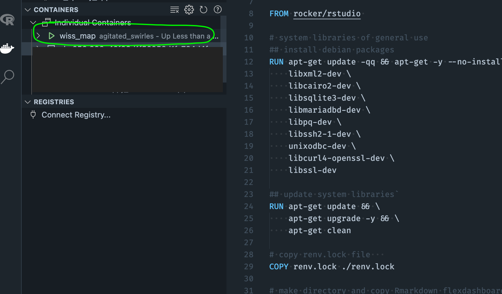

Containerizing bundles your app with all its dependencies, allowing you to deploy anywhere.
Once your app is finished and ready for deployment, use the {renv} package to create a lockfile by calling renv::snapshot(). A lockfile captures the state of your app’s R package dependencies, so if you do any further development using additional packages make sure to run this again to update the lockfile. The lockfile will be referenced in the dockerfile to install your app’s dependencies.
Next create a Dockerfile, which is a text document with a set of steps that contains all the commands to build and run your app. Here’s the Dockerfile I used in my Wissahickon valley explorer project, with a few things to note:
rocker/rstudio base imagerenv::restore()3838 is used for flexdashboards while 8080 should be used for shiny apps. als note the different ways to run each type of app (runApp vs run)# Docker file mostly comes from
# https://www.statworx.com/at/blog/how-to-dockerize-shinyapps/
# and
# https://medium.com/analytics-vidhya/deploying-a-shiny-flexdashboard-with-docker-cca338a10d12
# Base image https://hub.docker.com/u/rocker/
FROM rocker/rstudio
# system libraries of general use
## install debian packages
RUN apt-get update -qq && apt-get -y --no-install-recommends install \
libxml2-dev \
libcairo2-dev \
libsqlite3-dev \
libmariadbd-dev \
libpq-dev \
libssh2-1-dev \
unixodbc-dev \
libcurl4-openssl-dev \
libssl-dev
## update system libraries
RUN apt-get update && \
apt-get upgrade -y && \
apt-get clean
# copy renv.lock file
COPY renv.lock ./renv.lock
# make directory and copy Rmarkdown flexdashboard file in it
COPY /app ./app
# install renv & restore packages
RUN Rscript -e 'install.packages("renv")'
RUN Rscript -e 'renv::restore()'
# expose port on Docker container
EXPOSE 3838
# run shiny app as localhost and on exposed port in Docker container
# CMD ["R", "-e", "shiny::runApp('/app/wiss_map.Rmd', host = '0.0.0.0', port = 8080)"]
# run flexdashboard as localhost and on exposed port in Docker container
CMD ["R", "-e", "rmarkdown::run('/app/wiss_map.Rmd', shiny_args = list(port = 3838, host = '0.0.0.0'))"]Next you’ll need to build and run your image using the following commands in the terminal. I prefer to open my project folder in VScode and use the terminal in there.
docker build --rm --force-rm -t wiss_map .
wiss_map, you should change the tag to suit your project.docker image list to make sure you can see the newly created imagedocker run --rm -d -p 38:38 wiss_map (update wiss_map with whatever you tagged your image is in the above step)If everything went OK you should see the container running in the sidebar of VSCode. You can also right-click it and open in the browser.

Assuming you have an account on Dockerhub, follow these steps to push your image:
docker login --username=yourhubusername then enter your pw when prompted
docker imagesdocker tag <IMAGE ID> yourhubusername/<image_name>:firsttry (or whatever tag you want to use)docker push yourhubusername/<image_name>Then go do Dockerhub and verify you can see your image
Google Cloud Run is a way to deploy a containerized app serverlessly on Google cloud (serverless means you only pay for what you use). Google Cloud Run uses Google Container Registry to manage containers, so the workflow will look something like this:
finish developing app -> create dockerfile -> build image -> push image to dockerhub -> pull image from dockerhub in google cloudshell -> tag & push image to Google Container Registry -> deploy to Cloud Run
The following video will walk you through the process (or follow the some steps below):
docker pull user/image (replace user with your username and image with your image)docker imagesdocker tag user/image gcr.io/{project ID}/{image tag}docker push gcr.io/{project ID}/{image tag}
Cloud Run -> create service -> select container image you just made -> change service name if needed -> set the correct container port (8080 for shiny and 3838 for flexdashboards)In the event you make revisions and want to re-deploy, use these steps:
* revise app
* rebuild image using step 1 above
* push new image to dockerhub using step 2, think about tagging it v2 or something
* go to Cloud Run, pull and tag the new version using steps above
* on the Cloud Run sidebar click on Image -> deploy new revision -> select new image in dropdown -> deploy